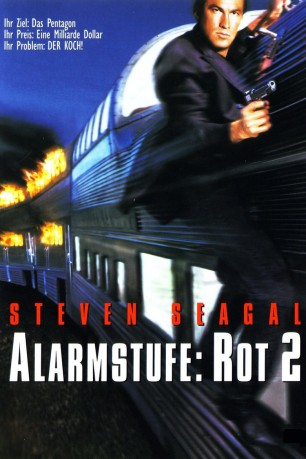

#5017 Alarmstufe - Rot 2
Alternativ: Under Siege 2: Dark Territory
 
 IMDB-Wertung: 5.4 / 10
IMDB-Wertung: 5.4 / 10  Metascore: 0
Metascore: 0 
Der “Koch” Casey Ryback unternimmt mit seiner Nichte eine Reise in einem Zug, der von Terroristen entführt wird. Die Verbrecher wollen einen zerstörerischen Satelliten in ihre Gewalt bringen, und drohen damit, Washington zu zerstören. Nur der ehemalige Navy-Seal Ryback kann sie noch aufhalten…
Jahr: 1995
Dauer: 95 Minuten
FSK: 16
Land: USA Studio: Warner Bros.Tonspuren: DD5.1 - ,
Untertitel: Englisch, Französisch, ,
Auflösung: 1080p (1920x1080) Größe: 6113 MB
Genre: Action, Thriller
Regisseur: Geoff Murphy
Drehbuch: Norman Maclean
Soundtrack:
Darsteller:
 Steven Seagal als Casey Ryback
Steven Seagal als Casey Ryback Eric Bogosian als Travis Dane
Eric Bogosian als Travis Dane Everett McGill als Marcus Penn
Everett McGill als Marcus Penn Katherine Heigl als Sarah Ryback
Katherine Heigl als Sarah Ryback Morris Chestnut als Bobby Zachs
Morris Chestnut als Bobby Zachs Peter Greene als Mercenary #1
Peter Greene als Mercenary #1 Patrick Kilpatrick als Mercenary #2
Patrick Kilpatrick als Mercenary #2- Brenda Bakke als Captain Linda Gilder
- Sandra Taylor als Kelly, Barmaid
 Jonathan Banks als Scotty, Mercenary
Jonathan Banks als Scotty, Mercenary- David Gianopoulos als Captain David Trilling
 Royce D. Applegate als Ryback's Cook
Royce D. Applegate als Ryback's Cook- Nick Mancuso als Tom Breaker
 Christopher Darga als Cook #1
Christopher Darga als Cook #1 Dale Dye als Captain Garza
Dale Dye als Captain Garza Kurtwood Smith als General Stanley Cooper
Kurtwood Smith als General Stanley Cooper- Julius R. Nasso als Hostage #2
- Phyllis Davis als Hostage #3
 Greg Collins als Huey Pilot
Greg Collins als Huey Pilot Wren T. Brown als Captain Williams
Wren T. Brown als Captain Williams D.C. Douglas als Technician #1
D.C. Douglas als Technician #1 Al Sapienza als Captain #2
Al Sapienza als Captain #2 Ping Wu als SYSOS Officer
Ping Wu als SYSOS Officer Anthony Backman als Control Room Officer , uncredited
Anthony Backman als Control Room Officer , uncredited James Lew als Mercenary , uncredited
James Lew als Mercenary , uncredited- Jacquie Palisi als Waitress , uncredited
 Manny Perry als Mercenary got shot on the Face , uncredited
Manny Perry als Mercenary got shot on the Face , uncredited Jen Sung als Mercenary , uncredited
Jen Sung als Mercenary , uncredited Scott Sowers als Mercenary #3
Scott Sowers als Mercenary #3- Afifi Alaouie als Female Mercenary
 Andy Romano als Admiral Bates
Andy Romano als Admiral Bates- Don Blakely als Cook #2
- James Clark als Train Consultant
- Stan Garner als Train Consultant
- Silan Smith als Friendly-Faced Engineer #1
- Rick Wiles als Conductor
- Denis L. Stewart als Holy Mercenary
- Jim Dirker als Helicopter Pilot
- Todd O. Russell als Ryback's Driver
- Warren Tabata als Bartender
- James V. Caciola als Hostage #4
- Ginger Lewis als Lady Hostage
- Ken Vieira als Helicopter Pilot
- Thom Adcox-Hernandez als Technician #2
- Catherine MacNeal als ATAC Assistant #1
- Frank Roman als Aide
- Jennifer Starr als ATAC Assistant #2
- Steve Abbott als Train Patron , uncredited
 Henry Kingi als Mercenary , uncredited
Henry Kingi als Mercenary , uncredited- Ted Shred als Hostage with Knife , uncredited
Datei: X:\FSK18-Collections\Alarmstufe Rot\Alarmstufe - Rot 2 (1995, FSK16, 1920x1080).mkv seit 19.12.2016
Festplatte: FSK18
 Alle Filme aus Gruppe 'FSK18-Collections\Alarmstufe Rot'
Alle Filme aus Gruppe 'FSK18-Collections\Alarmstufe Rot'